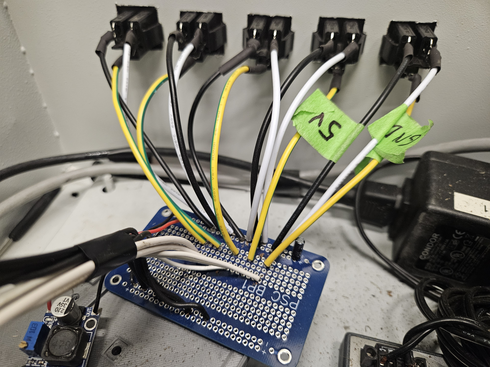
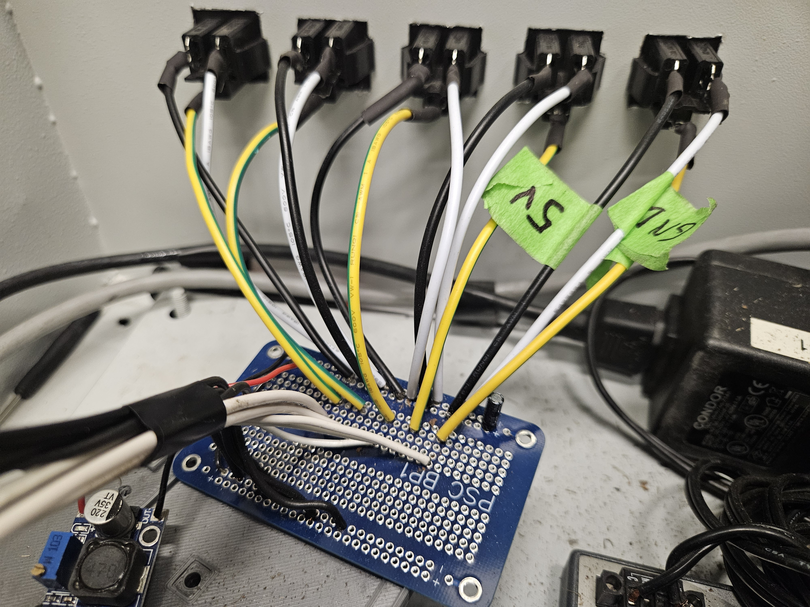
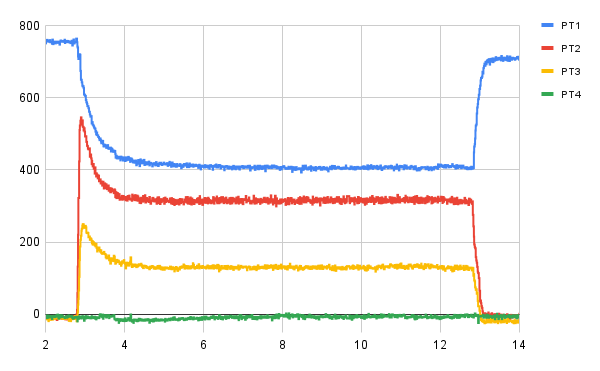

This project focused on optimizing and refining the static configuration’s data collection and control system. Key objectives included reducing signal noise in the sensors, improving reliability and robustness, and cutting down setup time to streamline launch-day operations, as electronics setup had previously been the primary bottleneck.
Static Configuration
The previous DAQ system suffered from significant sensor noise, largely caused by messy wiring, screw terminals, and suboptimal soldering. In some cases, poor soldering even led to sensor shorting, which compromised data quality. To address this, I resoldered the pressure transducer protoboard, replaced screw terminals with soldered joints and quick-disconnect outlets, and upgraded the voltage regulation system using a buck converter and capacitor. The images on the right illustrate the pressure transducer electronics before and after these improvements.
 

During a previous hot-fire test, the delay between ignition and run-valve actuation was too short, which resulted in engine failure. I modified the LabVIEW code to correct this timing, preventing future delays from affecting performance. Additionally, I added two pressure transducers to the system, increasing our sensing capability from three to five. Finally, I replaced the bulky ignition switch with a smaller, more robust MOSFET, improving both reliability and system compactness. In the image on the left, I am setting up the controls box in preparation for a static fire.

The figure on the right shows the pressure transducer data from a recent static fire. While some noise is still present, the data is much cleaner and can more easily be analyzed. PT1 reads the oxidizer tank pressure, which drops as expected during the 10-second test. PTs 2-4 were placed at various points within the system to determine efficiencies and pressure drops. During the test, hot paraffin wax clogged the port to PT4, causing it to read ambient pressures for the entire test. PT5 was not used, so it is not graphed. These higher-quality results helped us measure the combustion efficiency of our engine and improve on the next iteration.

The changes I led my team in implementing reduced setup time from two hours to just 30 minutes. Instead of screwing wires into place and constantly checking for shorts or other errors, we now simply plug in the pressure transducers, connect everything to the engine, and begin collecting data. Overall, the system is more robust, easier to troubleshoot, and provides cleaner, more reliable measurements.
.jpeg)